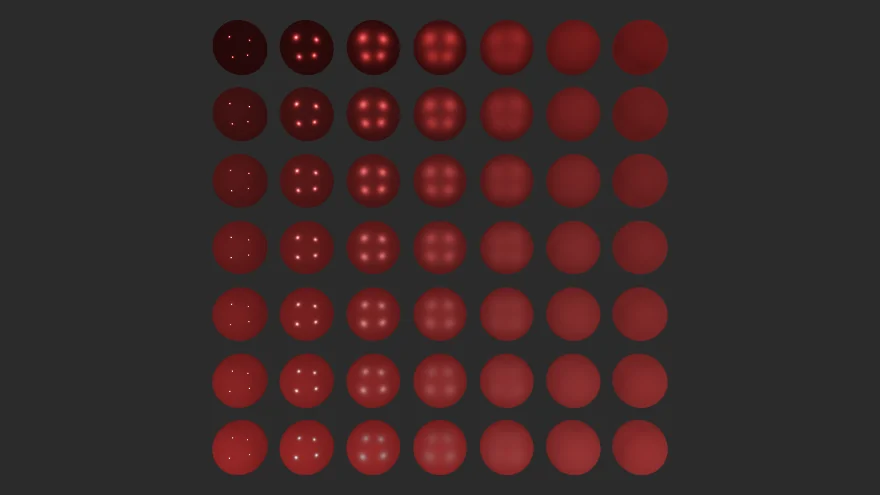

PBR
Lighting#
examples/Sources/16-PBR, run with swift run PBR. Download all examples or see how to run them.With the theory in hand, the PBR fragment shader is short. This chapter implements the Cook-Torrance BRDF for point lights, first with constant material values and then with textures.
The BRDF functions#
Each formula from the previous chapter becomes a small function:
constant float PI = 3.14159265359;
static float distributionGGX(float3 N, float3 H, float roughness) {
float a = roughness * roughness;
float a2 = a * a;
float NdotH = max(dot(N, H), 0.0);
float denom = NdotH * NdotH * (a2 - 1.0) + 1.0;
return a2 / (PI * denom * denom);
}
static float geometrySchlickGGX(float NdotV, float roughness) {
float r = roughness + 1.0;
float k = (r * r) / 8.0;
return NdotV / (NdotV * (1.0 - k) + k);
}
static float geometrySmith(float3 N, float3 V, float3 L, float roughness) {
float NdotV = max(dot(N, V), 0.0);
float NdotL = max(dot(N, L), 0.0);
return geometrySchlickGGX(NdotV, roughness) * geometrySchlickGGX(NdotL, roughness);
}
static float3 fresnelSchlick(float cosTheta, float3 F0) {
return F0 + (1.0 - F0) * pow(saturate(1.0 - cosTheta), 5.0);
}
Squaring the roughness before use (a = roughness²) makes the parameter feel linear to artists. It is a convention adopted by nearly all engines.
The fragment function#
struct PBRUniforms {
float3 viewPosition;
float3 albedo;
float metallic;
float roughness;
float ao;
uint lightCount;
};
struct PBRLight {
float3 position;
float3 color; // radiant intensity, can be far above 1
};
fragment float4 fragment_pbr(VertexOut in [[stage_in]],
constant PBRUniforms &uniforms [[buffer(1)]],
constant PBRLight *lights [[buffer(2)]]) {
float3 N = normalize(in.normal);
float3 V = normalize(uniforms.viewPosition - in.worldPosition);
float3 albedo = uniforms.albedo;
float metallic = uniforms.metallic;
float roughness = uniforms.roughness;
float3 F0 = mix(float3(0.04), albedo, metallic);
float3 Lo = float3(0.0);
for (uint i = 0; i < uniforms.lightCount; i++) {
float3 toLight = lights[i].position - in.worldPosition;
float distance = length(toLight);
float3 L = toLight / distance;
float3 H = normalize(V + L);
float3 radiance = lights[i].color / (distance * distance);
float D = distributionGGX(N, H, roughness);
float G = geometrySmith(N, V, L, roughness);
float3 F = fresnelSchlick(max(dot(H, V), 0.0), F0);
float NdotL = max(dot(N, L), 0.0);
float3 specular = (D * G * F) / (4.0 * max(dot(N, V), 0.0) * NdotL + 0.0001);
float3 kD = (1.0 - F) * (1.0 - metallic);
Lo += (kD * albedo / PI + specular) * radiance * NdotL;
}
float3 ambient = float3(0.03) * albedo * uniforms.ao;
return float4(ambient + Lo, 1.0);
}
Walking through the loop:
- Radiance is the light's color attenuated by the inverse square of the distance. A point light delivers all its energy from one direction, so the integral of the reflectance equation reduces to one evaluation per light.
- F0 blends from the dielectric value 0.04 to the albedo as the material becomes metallic.
- The specular term is
D·G·Fover the normalization factor. The small constant avoids a division by zero. kDremoves the reflected fraction and removes diffuse entirely for metals.- The result is multiplied by
NdotL, the cosine factor.
The output is linear HDR. It goes through the tone mapping pass from the HDR chapter and the sRGB drawable. Do not gamma correct in this shader.
The fixed ambient term is a placeholder. Replacing it with real light from the environment is the job of the next two chapters.
A grid of spheres#
The standard test: a grid of spheres where metalness increases from bottom to top and roughness from left to right. Model I/O generates the sphere:
let sphere = MDLMesh(sphereWithExtent: [1, 1, 1], segments: [64, 64],
inwardNormals: false, geometryType: .triangles, allocator: allocator)
sphere.vertexDescriptor = mdlDescriptor
sphereMesh = try MTKMesh(mesh: sphere, device: device)
// makeSphere() from the Model I/O chapter, drawn without an index buffer.
std::vector<MeshVertex> sphere = makeSphere(0.5f, 64);
sphereBuffer = device->newBuffer(sphere.data(), sizeof(MeshVertex) * sphere.size(),
MTL::ResourceStorageModeShared);
sphereVertexCount = sphere.size();
let rows = 7, columns = 7
for row in 0..<rows {
pbrUniforms.metallic = Float(row) / Float(rows - 1)
for column in 0..<columns {
// A roughness of exactly 0 gives an infinitely small highlight; clamp it.
pbrUniforms.roughness = max(Float(column) / Float(columns - 1), 0.05)
uniforms.model = float4x4(translation: [Float(column - columns / 2) * 2.5,
Float(row - rows / 2) * 2.5, 0])
// set uniforms, draw the sphere
}
}
const int rows = 7, columns = 7;
for (int row = 0; row < rows; row++) {
pbrUniforms.metallic = float(row) / float(rows - 1);
for (int column = 0; column < columns; column++) {
// A roughness of exactly 0 gives an infinitely small highlight; clamp it.
pbrUniforms.roughness = std::max(float(column) / float(columns - 1), 0.05f);
uniforms.model = translation(simd::float3{float(column - columns / 2) * 2.5f,
float(row - rows / 2) * 2.5f, 0});
// set uniforms, draw the sphere
}
}
Four lights with a color of (300, 300, 300) placed about 10 units in front of the grid light it well. Such large values are normal with inverse-square falloff.
Even with a flat ambient term the result is striking: rough dielectrics look like chalk or rubber, smooth ones like plastic, and the metals have colored, tight highlights.

Textured PBR#
Replace the constants with texture lookups, and use the normal mapping function from Normal Mapping:
fragment float4 fragment_pbr(VertexOut in [[stage_in]],
constant PBRUniforms &uniforms [[buffer(1)]],
constant PBRLight *lights [[buffer(2)]],
texture2d<float> albedoMap [[texture(0)]],
texture2d<float> normalMap [[texture(1)]],
texture2d<float> metallicMap [[texture(2)]],
texture2d<float> roughnessMap [[texture(3)]],
texture2d<float> aoMap [[texture(4)]],
sampler s [[sampler(0)]]) {
float3 albedo = albedoMap.sample(s, in.uv).rgb;
float metallic = metallicMap.sample(s, in.uv).r;
float roughness = roughnessMap.sample(s, in.uv).r;
float ao = aoMap.sample(s, in.uv).r;
float3 N = perturbedNormal(in, normalMap, s);
...
}
Load the albedo map as sRGB and all the others as linear data. Many asset packs combine occlusion, roughness and metalness into the red, green and blue channels of a single "ORM" texture, which saves two texture reads.
With Model I/O, extend the material loader from the Mesh chapter to read the .metallic, .roughness, .tangentSpaceNormal and .ambientOcclusion semantics, falling back to 1 × 1 textures holding the scalar values when a property has no texture.
Exercises#
- Give every sphere the same roughness and vary only the albedo to see how metals tint their highlights.
- Find a free PBR material set, such as rusted iron or worn plastic, and apply it to a sphere.